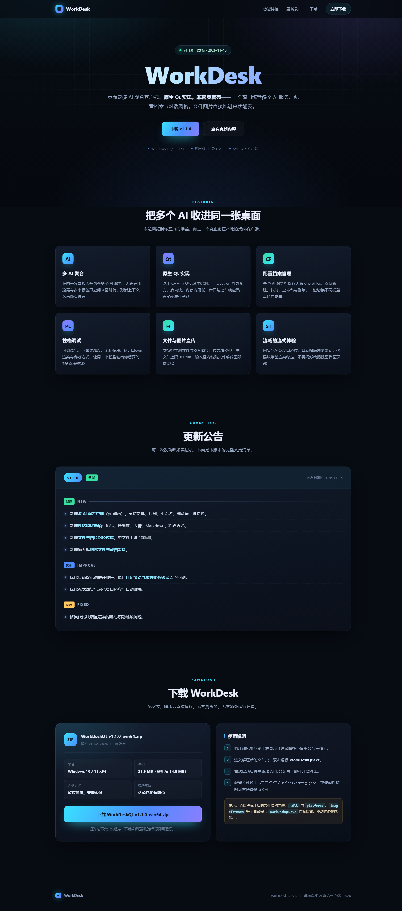
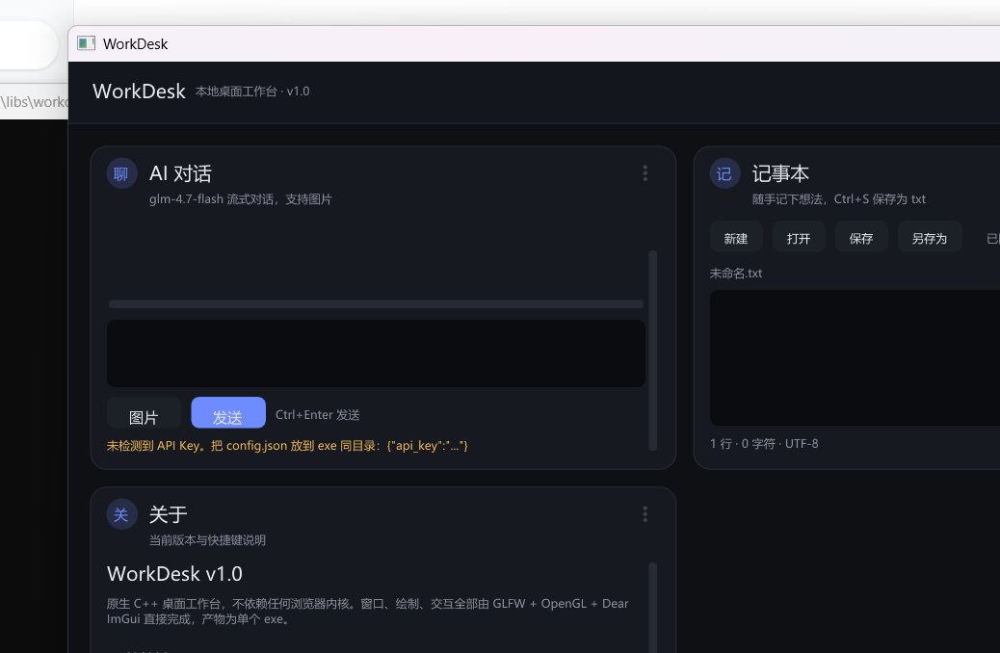
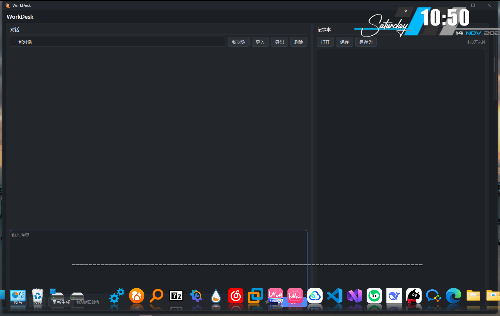
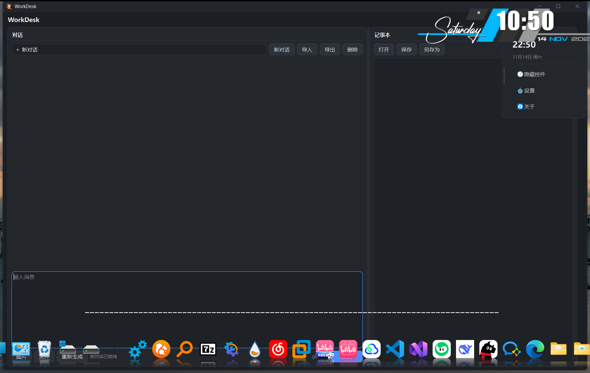

多 AI 聚合
在同一界面接入并切换多个 AI 服务，无需在浏览器与多个标签页之间来回跳转，对话上下文各自独立保存。
桌面端多 AI 聚合客户端。原生 Qt 实现，非网页套壳—— 一个窗口统管多个 AI 服务、配置档案与对话风格，文件图片直接拖进来就能发。
不是浏览器标签页的堆叠，而是一个真正跑在本地的桌面客户端。
在同一界面接入并切换多个 AI 服务，无需在浏览器与多个标签页之间来回跳转，对话上下文各自独立保存。
基于 C++ 与 Qt6 原生绘制，非 Electron 网页套壳。启动快、内存占用低，窗口与控件响应贴合系统原生手感。
每个 AI 服务可保存为独立 profiles，支持新建、复制、重命名与删除，一键切换不同模型与接口配置。
可调语气、回答详细度、表情使用、Markdown 渲染与称呼方式，让同一个模型输出你想要的那种说话风格。
支持把本地文件与图片路径直接交给模型，单文件上限 100MB；输入框内粘贴文件或截图即可发送。
回复气泡宽度自适应、自动贴底跟随滚动；代码块增量渲染稳定，不再闪烁或把视图弹回顶部。
客户端实际运行截图，原生窗口、桌面 dock 与对话界面。




每一次改动都如实记录，下面是本版本的完整变更清单。
Windows 10 / 11 x64 安装程序，下载后双击安装即可使用。项目已在 GitHub 开源。
本次下载的是 Windows 安装程序（.exe），不是压缩包—— 文件名为 WorkDesk-1.1.2-setup.exe，下载后双击运行， 按向导一路“下一步”即可装好，不需要解压，也不需要另外安装运行环境。